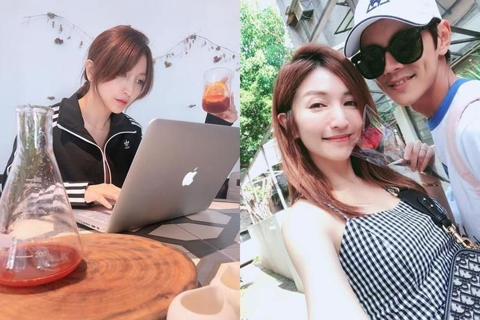

鏡週刊Mirror Media
今年6月謝忻在車邊激吻阿翔被本刊直擊後，當時正宮Grace選擇原諒。昨（28日）她在臉書PO文吐露心聲，大嘆「最近最常問自己的，就是，到底為什麼會讓日子過到失控的邊兒上去啊？！」似乎透露2人還在為修補婚姻努力。最後Grace又意有所指地說「然而，人生很多事是不會有答案的，放過自己吧！雖然，談何容易⋯」2011年11月7日結婚的阿翔、Grace，即將迎來8週年之際，Grace昨突然在Facebook發文「臨時搭上了飛機，為了某個極特別的節日，不得承認，很遺憾的⋯這回⋯和以往的心情，確實⋯很不同⋯」推算時間，疑似是為了慶祝結婚週年到澳門度假，但她心情似乎仍未完全好轉。Grace寫到，「最近最常問自己的，就是，到底為什麼會讓日子過到失控的邊兒上去啊？！」不忘幫自己打氣喊話「然而，人生很多事是不會有答案的。放過自己吧！雖然，談何容易⋯」還在文末告訴自己「愈難過的時候、愈要記得微笑」讓人心疼。
